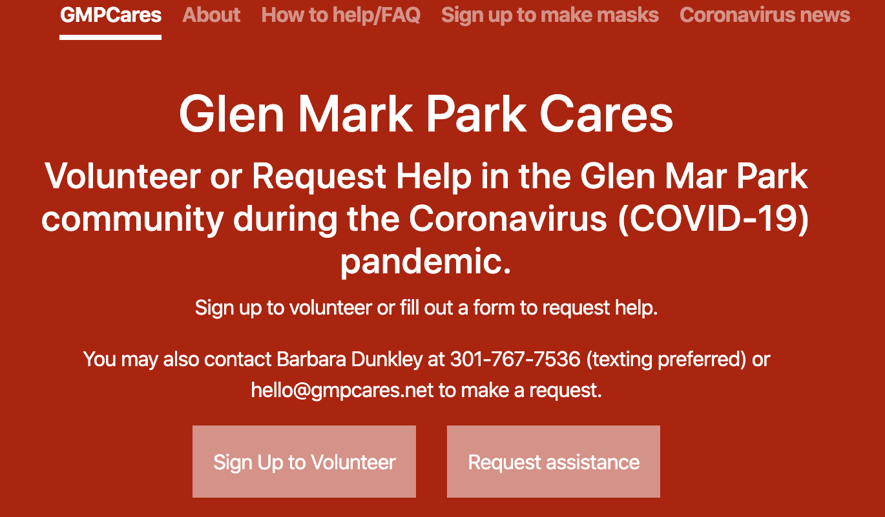
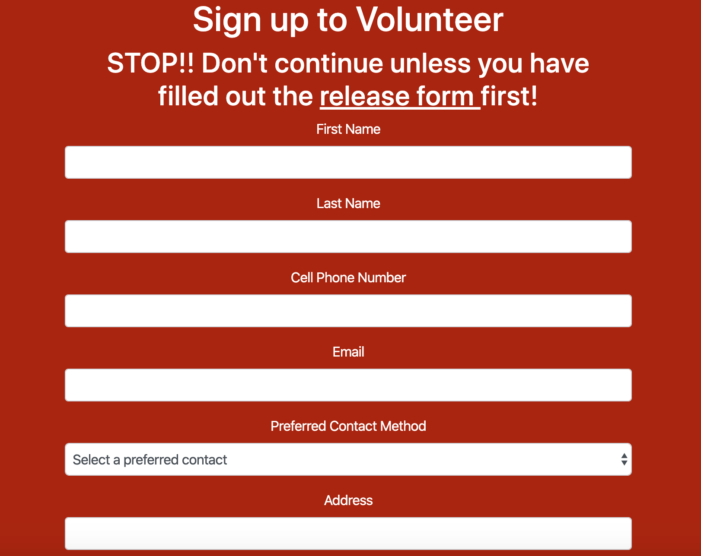

A website to connect neighbors in high-risk categories with volunteers
to perform daily tasks during the COVID-19 pandemic.
Solo Project | Stack: Flask, HTML/CSS, Bootstrap | Website
I moved back home after my college shut down due to COVID-19. There were many resources on the national and state level to help citizens during the pandemic, however not much at the local level, at least in my area. I wanted to use my tech skills to help my neighbors who may be in high-risk categories such as those over sixty or immuno-compromised. GMPCares.net connects neighbors in high-risk categories with volunteers to perform daily tasks during the COVID-19 pandemic, such as grocery shopping, picking up prescriptions, meal preparation for the sick, lawn care, and emergency childcare.
After building my Python skills over the past 6 months, I wanted to try my hand at full-stack development using Python. I decided to learn Flask and I went through Miguel Grinberg’s Flask Mega-Tutorial.The frontend is very minimalistic - the main user feature is filling out forms. The backend is where the magic happens.
I created and processed the forms with WTForms and sent an email to both the GMPCares admin email and the user’s email as a confirmation. I then populated the form data into a Google Sheets. Although not the most secure option, I chose to use Google Sheets because of its convenience factor when multiple people needed to look at the data. I then deployed the website using Heroku.
One of the first big issues was getting past Google’s security features to send emails to Gmail and connect to the Google Drive API. I used an OAuth key that was generated using the Google Drive API dashboard in order to access Google Sheets. It was interesting to learn about security as a web developer and it made me appreciate companies that prioritize the security of its customers, even if it was a little annoying as a developer.
A second problem I had was with integrating checkboxes in WTForms with Bootstrap. In my first round of development when I was focusing on functionality rather than aesthetics, I had a form field with multiple checkboxes to select tasks that the volunteer was open to performing. Afterwards when I tried using Bootstrap with WTForms, Bootstrap did not recognize the multiple checkboxes and covered other parts of the form over it. I tried integrating a Flask-Bootstrap package that claimed to work better with Flask syntax. However other people had the same issue as I did and did not find any resolution so I deleted the multiple checkboxes and went for a simple text field where the user would type in the tasks they would perform.
This project was a huge learning opportunity. I taught myself Flask and learned how to format and organize a Flask project. I also learned how to write and format legal forms such as a terms and conditions and release forms onto a website - not necessarily a coding skills, but a useful skill nonetheless for future projects. Finally, I learned how to deploy a website using Heroku.
In future releases I hope to figure out a way to put a multiple checkboxes into the volunteer form and also improve the design overall. I also want to work on a way to make the release form more user friendly.